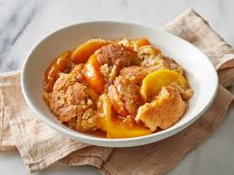

Peach Cobbler

A cobbler is a deep-dish fruit dessert featuring a sweetened
fruit filling topped with a biscuit-like dough,
which can cover the entire dish or be dropped by
the spoonful, resembling a cobblestone street.
It offers a fruit-and-pastry combination similar to pie but
with less effort. For peach cobbler, peaches
(fresh, frozen, or canned) are mixed with sugar, spices,
lemon juice, and cornstarch, then topped with the biscuit dough
and sprinkled with a cinnamon-sugar mixture.
Ingredients
- 8 peaches
- 1/4 cup white sugar
- 1/4 cup brown sugar
- 1/4 teaspoon ground cinnamon
- 1/8 teaspoon ground nutmeg
- 1 teaspoon lemon juice
- 2 teaspoon cornstarch
- 1 cup all-purpose flour
- 1/4 cup white sugar
- 1/4 cup brown sugar
- 1 teaspoon baking powder
- 1/2 teaspoon salt
- 6 tablespoons butter
- 1/4 cup water
- 3 tablespoons white sugar
- 1 teaspoon ground cinamon
Steps
- Preheat oven to 425 degrees F
- Toss peaches with 1/4 cup each of white and brown sugar, 1/4 teaspoon cinnamon, nutmeg, lemon juice, and cornstarch. Pour into a 2-quart baking dish and bake for 10 minutes
- In a large bowl, combine flour, 1/4 cup each of white and brown sugar, baking powder, and salt. Blend in butter until the mixture resembles coarse meal, then stir in water until just combined.
- Remove peaches from the oven and drop spoonfuls of the topping over them.
- Mix 3 tablespoons of white sugar with 1 teaspoon of cinnamon in a small bowl, then sprinkle over the cobbler
- Enjoy :)